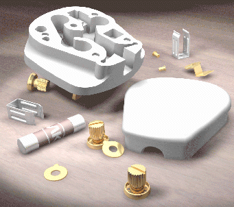

Estimated time to complete this lesson: 18–27 minutes

In this part of the lesson, you will:
Apply System Scenes.
Control scene backgrounds.
Control staging factors.
Set up and control camera-like lens effects.
Set up and control Image-Based Lighting (IBL).